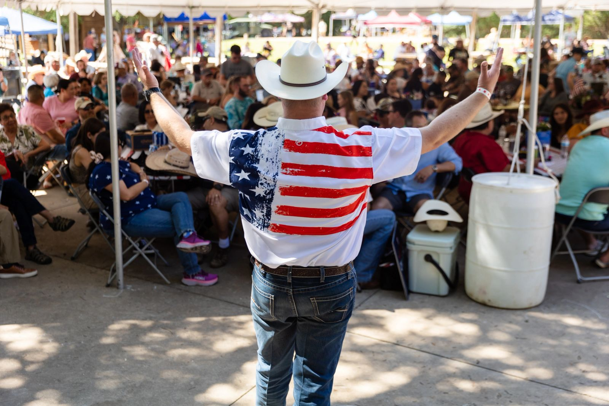
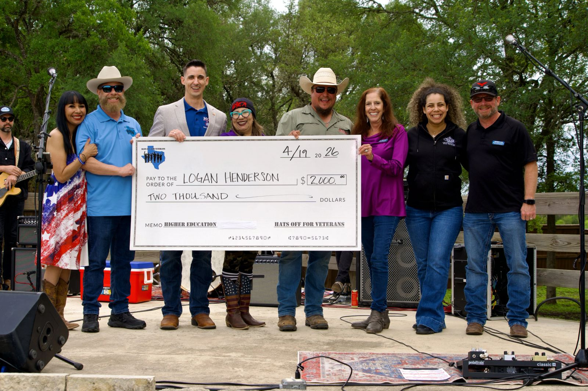
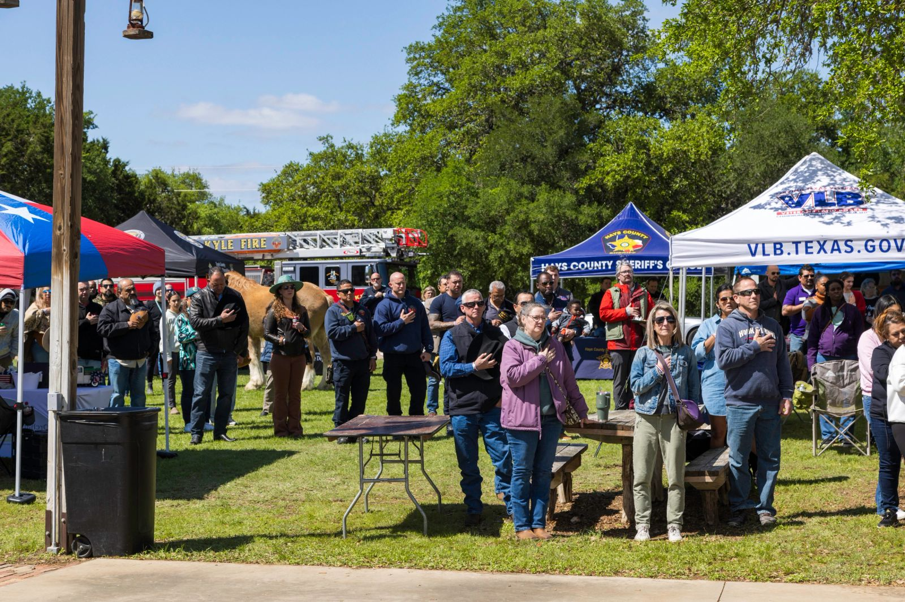
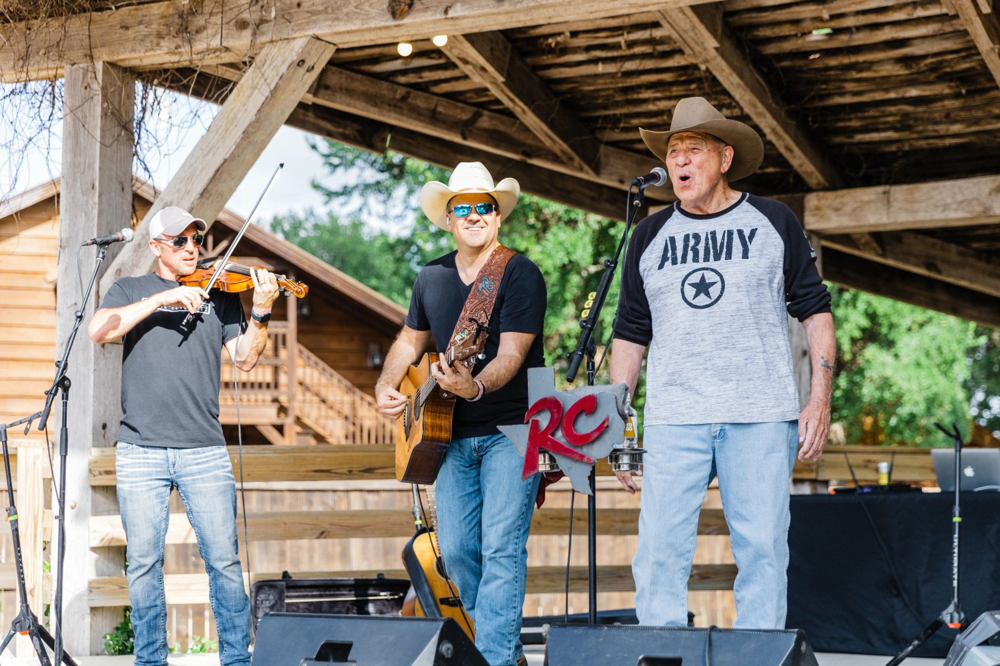
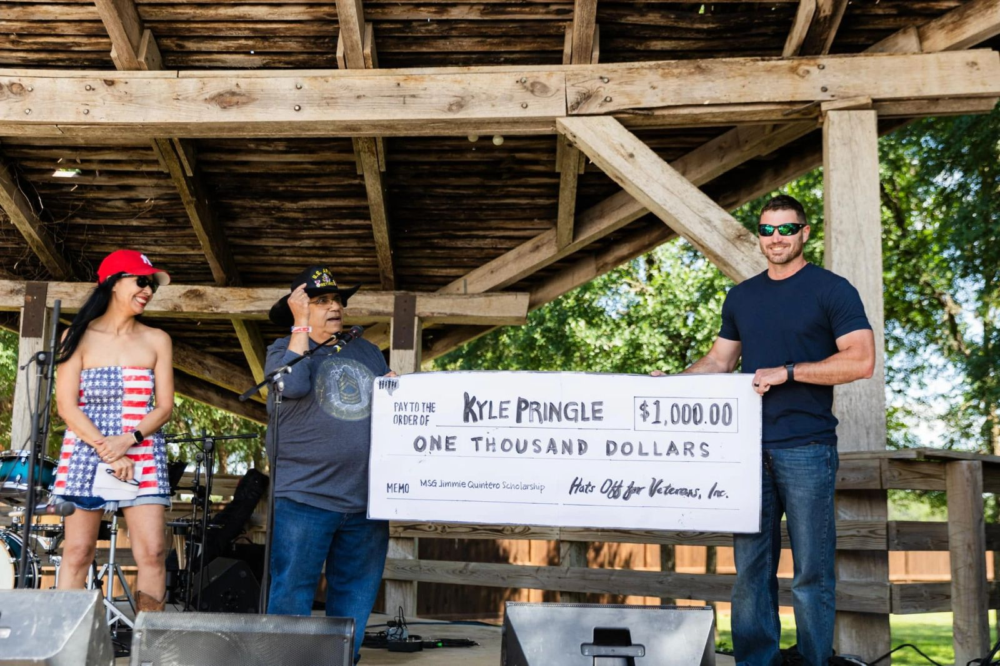
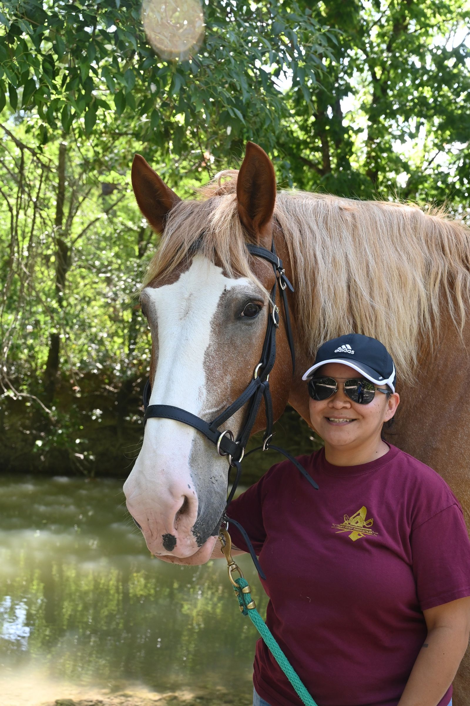

Higher Education Scholarships
For veterans pursuing their first higher education degree. The GI Bill covers a lot; this scholarship goes a step further.
Scholarship detailsFor Texas veterans and their families
Hats Off For Veterans is a 100% volunteer-run nonprofit, part of the Hays County community for over 21 years.





Our mission
At Hats Off For Veterans, we are dedicated to empowering Texas veterans and families through higher education scholarships, professional development grant opportunities, and access to mental health counseling resources.
Our mission is to honor their service by equipping them with the tools and support needed to thrive in their personal and professional lives.
How we got hereHow we help
For veterans pursuing their first higher education degree. The GI Bill covers a lot; this scholarship goes a step further.
Scholarship details
Currently closedUp to $500 per application toward certification and licensing exams, registration fees, courses, conferences and workshops.
What the grant coversFor Texas high school seniors who have committed to enlist in any branch of the U.S. Armed Forces. Two $500 scholarships in 2027.
About the scholarshipCourage to Connect
Two free, peer-to-peer support groups on Zoom, open worldwide and hosted by HOFV volunteers and veteran peers.
Every age, generation, branch, rank and circumstance. First names only, or stay anonymous.
For anyone who lives with or cares for someone with PTSD, or is grieving a suicide loss. First responders and their families are welcome.
These groups are peer support, not treatment. If you or someone you love is in crisis, dial 988, then press 1 for the Veterans Crisis Line. More crisis resources
In their words
What stands out most is that Hats Off For Veterans understands the GI Bill does not cover every financial or personal challenge veterans face while transitioning to higher education.
Logan H., U.S. Navy · 2026 Higher Education Scholarship recipient
The grant from HOFV was invaluable, covering my registration fees and enabling me to fully focus on the professional development workshop without financial worries.
Jennifer G., U.S. Marines
Read every testimonialI truly appreciate HOFV investing in veterans and our futures.
James H., U.S. Army
What's coming up
6:30 PM · Texas Old Town, Kyle. A magical evening benefiting Texas veterans.
Tickets and sponsorships7:00 PM Central · Zoom. Come and go as you're comfortable.
How to joinThe Reagan Hicks Band, Black's Original BBQ and a full lineup of resource vendors. The resource fair is free for all veterans and their families.
Details and sponsorshipsOur history
Founder and CEO Lisa Adams created Hats Off For Hospice in 2005 to fulfil end-of-life wishes: fishing trips, family portraits, even a hot air balloon ride. As the need among local veterans and their families grew, the community that built it chose a new mission.
Stand with us
Support a veteran's education, professional development and mental health goals. All HOFV donations are tax-deductible. EIN 93-2881793.
Give todayOur volunteers are the whole organization. Tell us about yourself and how you'd like to contribute.
Volunteer applicationSponsor the 2027 BBQ, plan a gift, or bring HOFV to your event as a community outreach partner.
Partner with HOFV